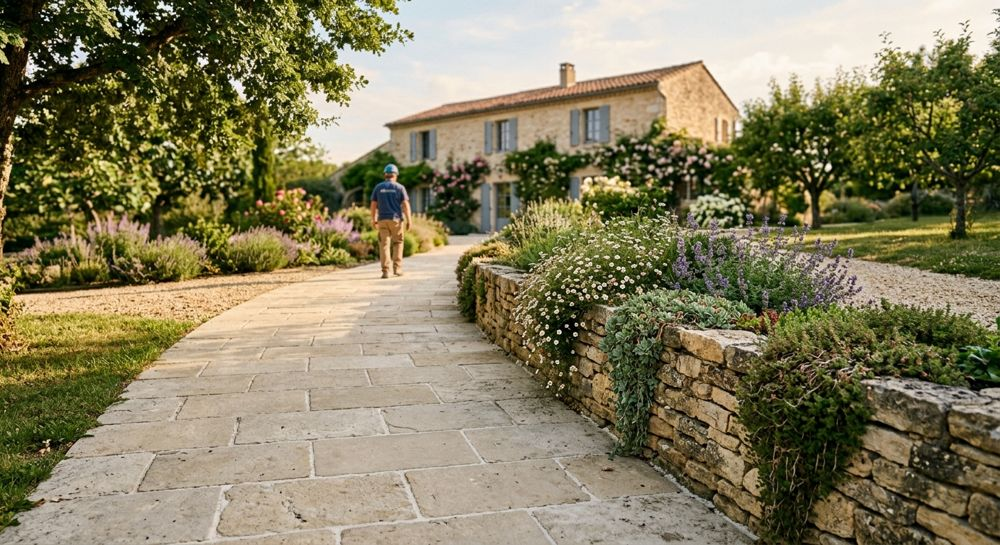

À propos
Un paysagiste de Beynes.
Au Cœur de vos Jardins est une société d'aménagement paysager créée en 2017 et dirigée par David Duarte.

L'entreprise en bref
Une structure à taille humaine.
Les informations ci-dessous proviennent de l'annuaire officiel des entreprises.
FormeSARL
CréationSeptembre 2017
SiègeBeynes (78650)
ActivitéAménagement paysager
DirigeantDavid Duarte
ÉquipePetite structure
Notre regard
Un jardin se pense avec son terrain.
Partir du sol
Exposition, pente, nature de la terre : le terrain dicte ce qui peut pousser et ce qui tiendra.
Penser avec la maison
Terrasse, allée et massifs prolongent l'habitation. Les matériaux dialoguent avec la façade.
Voir dans la durée
Un aménagement doit bien vieillir et rester simple à entretenir une fois les végétaux installés.

Autour de Beynes
Basés à Beynes, dans les Yvelines.
L'entreprise est installée à Beynes (78650). Pour savoir si votre commune peut être desservie, un appel suffit.
06 83 64 88 18 Écrire à l'entrepriseFaisons connaissance
Le plus simple : en parler.
Un appel ou un message, et nous prenons le temps de comprendre votre jardin.